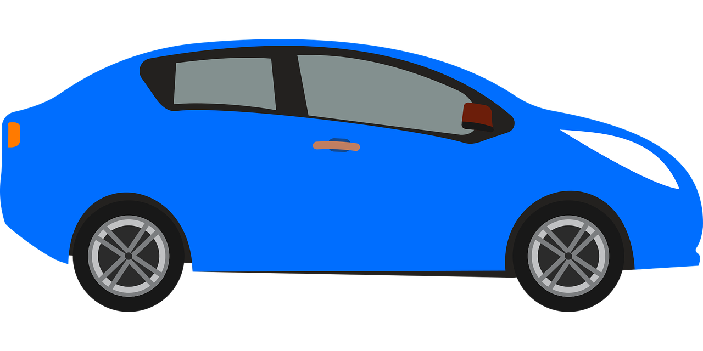

<div class="toolbar" role="banner">
    <a href="/">Just Travel</a>
    <div class="spacer"></div>
    <button class="menu-nav-boton" aria-label="Abrir menú"><i class="fas fa-bars"></i></button>
    <div class="options" id="list-menu">
        <li><a [hidden]='navList.login' rel="noopener" routerLink="/login" title="Login" id="nav-login"><i class="fas fa-user-lock"></i>&nbsp;Iniciar sesión</a></li>
        <li><a [hidden]='navList.mapa' rel="noopener" routerLink="/mapa" title="Mapa" id="nav-mapa"><i class="fas fa-map-marked-alt"></i>&nbsp;Mapa</a></li>
        <li><a [hidden]='navList.viajes' rel="noopener" routerLink="/viajes" title="Mis viajes" id="nav-viajes"><i class="fas fa-car"></i>&nbsp;Mis viajes</a></li>
        <li><a [hidden]='navList.logout' rel="noopener" (click)='logout()' title="LogOut" id="nav-logout"><i class="fas fa-times-circle"></i>&nbsp;Cerrar sesión</a></li>
    </div>
</div>

<div class="container">
    <router-outlet></router-outlet>
</div>